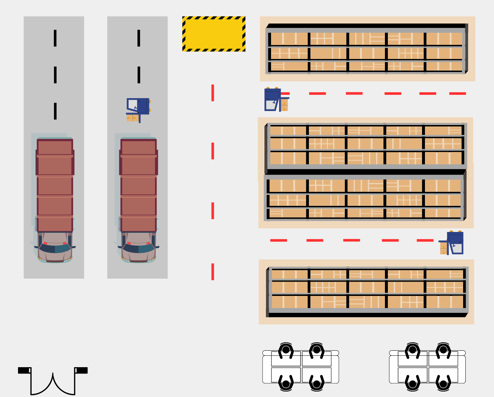

Datos Importantes
Menor en tamaño comparado con el almacén principal,
con una superficie que puede variar entre 1,000 y
5,000 metros cuadrados. La altura del techo suele ser de 6 a 8 metros.

1
2
3
4